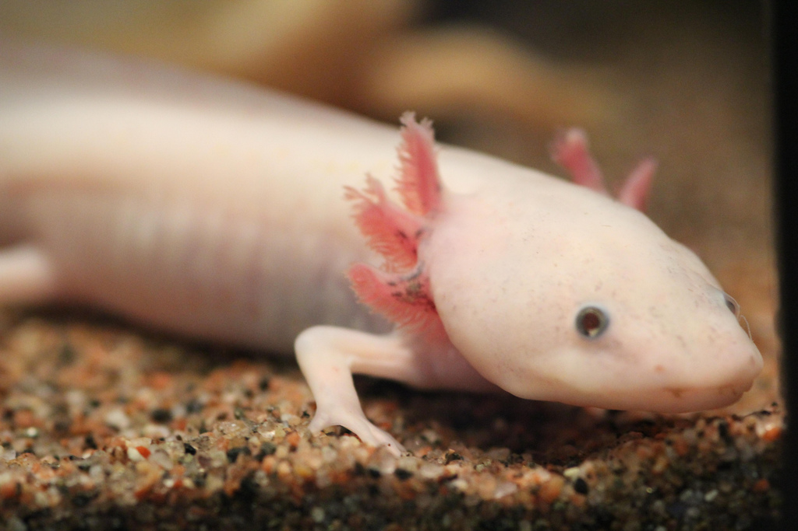
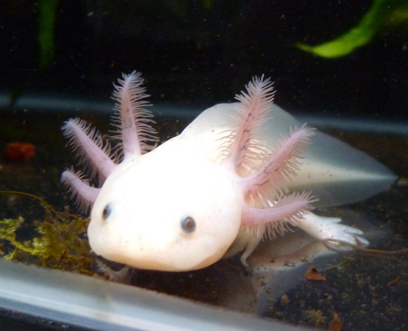
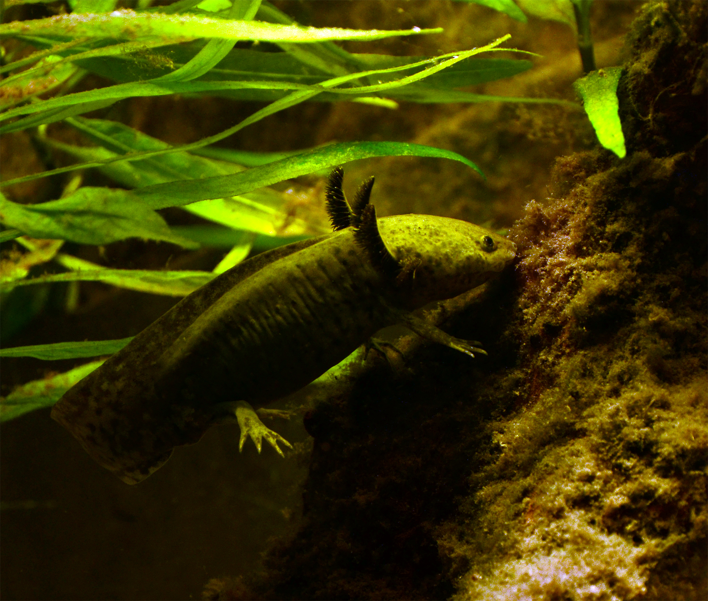
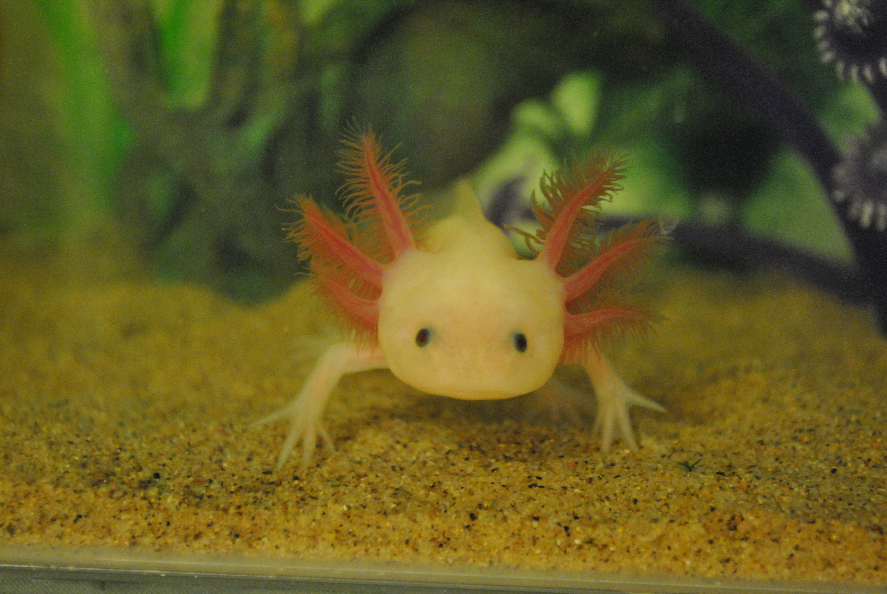
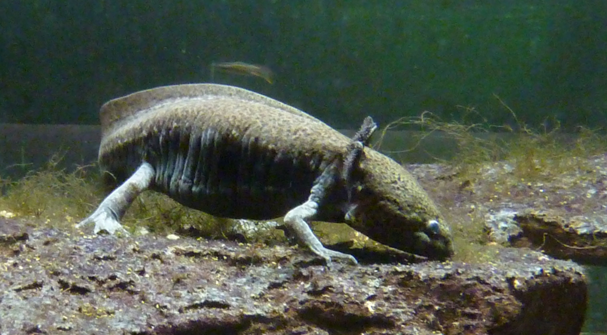
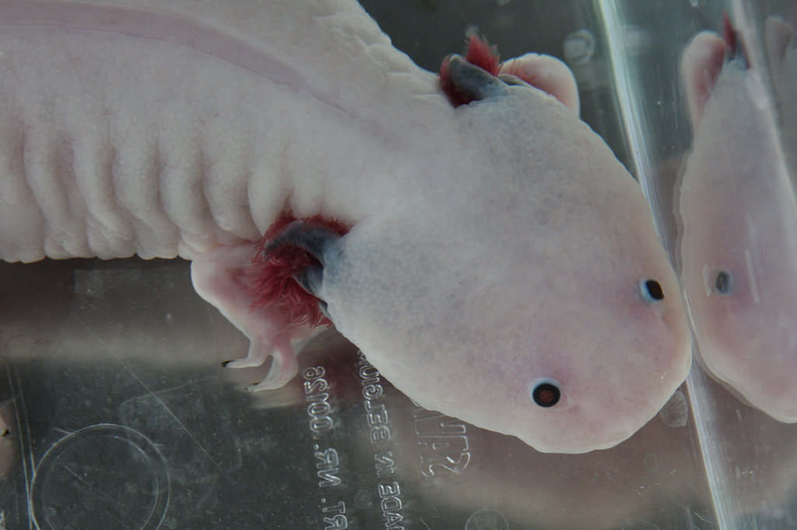
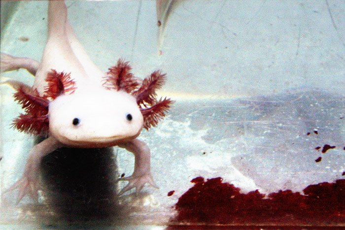

The Axolotl... What is it?
Come, explore its world...
Axolotls are amphibians, commonly related to the tiger salamander.

They come from the Valley of Mexico. Specifically, the lakes Xochimilco and Chalco. Their name comes from the Nahuatl and is commonly accepted to mean “Water Dog.”
Axolotls are naturaly earthier in color, such as brown, or tan. The other colors commonly seen are mutations bred in captivity.


What are those frilly things sticking out from behind their head?
They’re gills, just like fish have!
Axolotls will eat just about anything, but they mostly eat insects, worms, and small fish.


Axolotls are a neotenic species. They retain the physical traits of their youth into adulthood. Maybe that’s why they’re so cute!
What other species can you think of that does that?
Axolotls have uncanny regeneration abilities! While most amphibians are regenerative, axolotls are even more so. That’s why they’re so valuable to scientists.


Axolotl’s are pretty amazing, right?
Unfortunately, they’re also critically endangered.
That’s why we gotta do everything we can to help them!